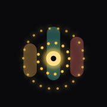

Troubadour Map
Made for iPhone and iPad
Troubadour Map installs on an iPhone or an iPad, from Safari, as an app on the Home Screen. Open this page there to install it.
On a computer, this page is the Map editor: draw your worlds there. On Android, Troubadour Map is coming as an app.
Back to Troubadour Map